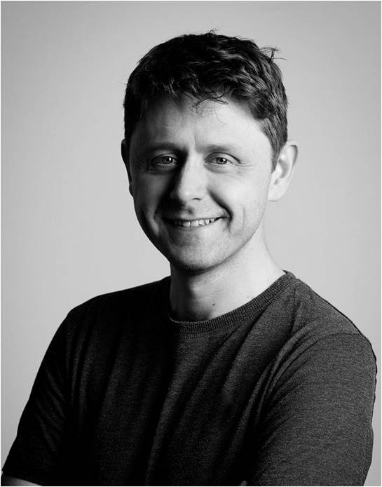

About Me
I am an osteopath, registered with the General Osteopathic Council (GOsC) in the UK (reg. number 4616) & a lecturer in osteopathy.
I qualified from the British School of Osteopathy (BSO, now the University College of Osteopathy) in 2001 with a BSc (Hons) in Osteopathy. I have worked in various private, NHS & higher education settings, specialising in the treatment of adults (18+); I do not work with children (or animals!).
From 2002, I combined working in private practice in south east London with lecturing at BSO, taking a full time academic & clinical role there in 2006. I gained a Postgraduate Certificate in Academic Practice (PgCAP) from the University of Bedfordshire in 2009 & became a Fellow of the Higher Education Academy (FHEA) in 2010. In 2016, I went part time to concentrate on my family & returned to private practice in 2023.
Since 2010, I have delivered post-graduate continuous professional development (CPD) lectures & workshops in osteopathy. I specialise in Still Technique, & have taught in UK, Italy, Poland & the Netherlands.
Outside of work, I follow West Ham Utd & England cricket (for my sins). I write & occasionally publish poetry, co-running a small, local Poetry Society writing group. I also have a BA (Hons) History from the University of York.
